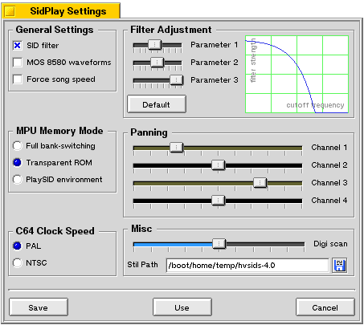

Player Settings
SID Player Settings

General Settings:
SID filter:
Disables or enables the filter emulation. |
MOS 8580 waveforms:
Force the player to use the waveforms from the newest generation of the C64 computer. |
Force song speed:
Force the C64 clock to be equal to the SID clock, setting any PAL song to NTSC and vice versa. |
MPU Memory Mode:
Here you have the choice between 3
levels of emulation, where Full bank-switching is the one closest
to the original behaviour of the C64 and PlaySID environment only
has a tiny bit of emulation.
C64 Clock Speed:
If your favourite C64 tune seem to
play at an odd speed you can try to change this setting.
Filter Adjustment:
Use the three parameter sliders to
change the sound of the filter emulation. The default button resets
the sliders to their original positions.
Panning:
The four sliders lets you choose for yourself
where in the stereo spectrum you want the four channels to be
placed. Sliding it all to the left places the sound of the channel
all to the left in your speakers and so on. The fourth channel
is simply the sample channel.
Misc:
If you only have a few cpu-cycles left and you
want to optimize the players performance, the digiscan slider
is used to choose how far in the module the player should look
for sample usage. If the player doesn't find any use of samples
in the given period, it will totally disable the sample emulation
and thereby make the player faster. Sliding this completely to
the left disables the test and forces the sid player to emulate
samples.
"Stil Path" sets path to SID information file. Set path to HVSC main folder and APlayer can
show interesting facts about SID files you are playing. If Stil Path is empty, STIL support is disabled.
NOTE: If Stil is enabled then first SID may take a long time to load as APlayer must parse Stil
file which is very big.
|